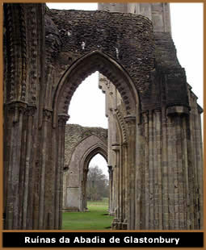
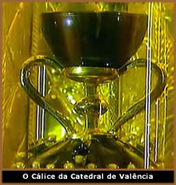
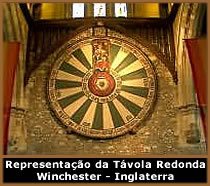

O Santo Graal
é um dos mais antigos e enigmáticos mitos
da humanidade. Sob uma análise superficial, é o
cálice usado por Jesus
Cristo no episódio da Última Ceia e que contém
seu sangue, que havia sido recolhido no momento da crucificação.
O termo Graal, no francês
arcaico, significa bandeja. Por outro lado, pode ter
origem latina, no vocábulo Gradalis, que significa
cálice. Já o termo Sangraal seria
uma variação etimológica de Sangue Real.
Origens Celtas
A origem do mito pode ser analisada sob um ponto
de vista pré-cristão. Sabe-se que entre os celtas,
recipientes utilizados para armazenar alimentos, eram considerados
objetos sagrados. Este conceito estende-se ao caldeirão
mágico (representando o útero da Deusa) referencial
de ritos pagãos, capaz de renovar e ressuscitar.
Portanto, partindo do princípio que os
celtas instalaram-se em diversas regiões da Europa, inclusive
onde atualmente é o Reino Unido, e as primeiras citações
históricas do Graal referem-se às lendas arthurianas,
que, por sua vez, surgiram nesta região, é possível
que o mito do Cálice Sagrado tenha apenas se transportado
através dos séculos e sido adaptado ao Graal; desta
vez, através de uma releitura cristã. Porém,
mesmo entre os celtas, já havia uma lenda semelhante de
um valoroso líder que saía em busca de um caldeirão
sagrado.
Numa narrativa mais fantasiosa, o próprio
Cristo, quando esteve na Cornualha, recebeu de presente um cálice
de um druida (sacerdote celta). Jesus atribuía um valor
especial e este objeto. Após o episódio da crucificação,
José de Arimatéia decidiu levar o objeto, já
santificado pelo sangue de Jesus, de volta ao sacerdote celta.
Este sacerdote celta seria Merlin, o poderoso mago das lendas
da Távola Redonda.
Origens Cristãs
Há, pelo menos, duas versões para
justificar a origem e o desenvolvimento histórico do mito.
Numa primeira análise, a lenda conta que José de
Arimatéia recolheu no cálice utilizado na Última
Ceia, o sangue de Jesus, no momento em que este era crucificado,
após o último golpe de lança aplicado pelo
soldado romano conhecido por Longinus.
José, que era membro do Sinédrio
(tribunal judeu) e um homem de posses, solicitou ao imperador
Poncio Pilatos o corpo de Cristo como uma "recompensa"
por seus préstimos ao império. Pilatos atendeu ao
pedido e José enterrou o corpo de Cristo em suas terras.
Após
este fato, José de Arimatéia, que secretamente era
seguidor de Cristo, teria sido feito prisioneiro pelos judeus
por ocasião do sumiço do corpo de Cristo. José
ficou muito tempo como prisioneiro numa cela sem janelas, alimentando-se
apenas de uma hóstia diária, entregue por uma pomba
que se materializava. Certa vez, o próprio Cristo surgiu
diante de José entregou-lhe o Graal com a missão
de protegê-lo.
Após conquistar a liberdade, utilizou-se
de uma conhecida rota comercial e viajou para Inglaterra, levando
consigo o Cálice Sagrado. Ao chegar, reuniu alguns discípulos
de Cristo e fundou uma pequena Igreja, onde atualmente há
as ruínas da Abadia de Glastonbury. Porém, não
é possível afirmar onde o Graal teria sido ocultado
a partir deste momento.
Numa segunda versão, Maria Madalena (que
em interpretações não-canônicas, poderia
ser esposa de Cristo), teria tomado posse do cálice e levado
para a França, onde passou o resto da vida.
Em ambas versões, após o Cálice
Sagrado chegar em terras européias, seja através
de Maria Madalena ou José de Arimatéia, segue diversas
rotas entre os alguns países deste continente e confunde-se
entre a história e a literatura medieval.
Trajetória do
Graal na história
A continuidade mais conhecida sobre o destino
do Graal, atesta que este teria ficado sob a tutela dos
Templários. Assim, os Cavaleiros teriam levado o cálice
para a aldeia francesa de Rennes-Le-Château. Sob outra narrativa,
o Graal teria sido levado para a cidade de Constantinopla e em
seguida para Troyes, onde no período da Revolução
Francesa (a partir de 1789), teria desaparecido misteriosamente.
Uma outra versão atesta que os cátaros,
um grupo cristão que vivia isolado na fortaleza de Montsegur
e pregava uma fé simples, oposta às imposições
clericais, ocultavam uma relíquia religiosa de valor muito
alto. Mas, em meados do século XIII, os cátaros
foram vítimas de uma invasão de cruzados ordenada
pelo Papa. Mais de duzentos membros da doutrina foram queimados
sob a acusação de heresia e a misteriosa relíquia
desapareceu durante a investida dos soldados. Mas não há
nenhuma evidência confiável indicando que fosse o
Graal.
Neste mesmo período, surgem boatos de que
os cruzados que regressavam de Jerusalém traziam consigo
uma âmbula contendo o sangue de Cristo; contradizendo e
confundindo ainda mais a rota histórica do Santo Graal.
Entretanto, através de estudos arqueológicos
e investigações profundas, tomando como base também
os primeiros registros literários, foi possível
traçar uma linha mais próxima da realidade sobre
a trajetória do Graal na Europa e na história.
Inicialmente, nos primeiros três séculos
após chegar em solo europeu, o cálice teria ficado
na Itália. Por volta do século III, o monge São
Lourenço o levou para a região dos Pirineus Orientais,
na Espanha. Noutra versão, seria um ermitão de nome
Juan de Atares.
Ainda, seguindo a rota sugerida nas obras literárias
medievais, principalmente em Parzifal (Wolfram von Eschenbach),
o cálice teria sido ocultado no monastério de San
Juan de La Penha, na cadeia montanhosa dos Pirineus. Neste ponto
há uma conexão real entre a obra de Eschenbach e
o relato histórico do monge São Lourenço
que conduziu o cálice até os Pirineus.
Ainda
tomando por base a obra Parzifal, porém, havendo
neste ponto um "vácuo histórico", o Santo
Graal passa por Zaragoza e surge, desta vez, na Catedral de Valência,
na qual há uma pequena capela, construída no século
XIV, conhecida como Capela do Santo Cálice. Neste local,
aos olhos dos visitantes mas protegido por um sacrário
à prova de balas, encontra-se um cálice ostentado
há mais de seiscentos anos como o legítimo Santo
Graal.
As evidências científicas atestam
que esta relíquia foi produzida entre a segunda metade
do primeiro século antes de Cristo e a primeira metade
do primeiro século da era Cristã. Ainda, esta peça
foi produzida em ágata roxa na região de Alexandria
ou Antioquia; mas, posterior-mente, já na Espanha, no século
XIII, recebeu adornos de ouro e de pedras preciosas como esmeraldas
e rubis, tendo o conjunto uma altura de aproximadamente 17 centímetros.
Portanto, é cientificamente comprovado
que o Cálice da Catedral de Valência foi produzido
no período e região correspondente à versão
cristã do Santo Graal. Mas a Igreja não o aceita
como uma relíquia religiosa e também não
é possível atestar que seja este o cálice
que comportou o sangue de Cristo.
Literatura e Simbolismo
Entre tantos aspectos simbólicos atribuídos
ao Graal, muitos nasceram na interpretação dos artistas
que, ao longo dos séculos, recondicionaram a lenda de diversas
formas, principalmente na literatura medieval.
Por volta do ano 1190, o romance de Chrétien
de Troyes intitulado Le Conte du Graal, narra a busca
pelo cálice. Trata-se de um poema inacabado contendo nove
mil versos que abordam a busca pelo Santo Graal. Interessante
é que o lendário Rei Arthur não participa
diretamente da epopéia, que finaliza sem que o objeto almejado
seja encontrado. Esta obra foi o ponto de partida para as obras
futuras abordando o tema.
Entre 1200 e 1210, o francês Robert de Boron,
publicou Roman de L'Estoire du Graal; o que popularizou
ainda mais o tema e inseriu os elementos históricos não
muito diferentes dos que são conhecidos atualmente.
Outra obra de Boron, Joseph d'Arimathie,
traça conexões simbólicas interessantes ao
citar que José de Arimatéia foi ferido na coxa por
uma lança. Em outra versão, o ferimento é
nos órgãos genitais. Percebe-se, portanto, uma associação
entre a lança, arma utilizada pelos soldados romanos, e
a espada, principal arma e uma das maiores referências das
lendas arthurianas (como a mítica Excalibur). Assim, o
ferimento nos genitais sofrido por José em virtude de sua
quebra do voto de castidade, associa-se à traição
de Lancelot, um dos componentes da Távola Redonda e homem
de confiança de Arthur, que tornou-se amante de Guinevere,
esposa do Rei.
Nesta mesma época, a obra Parzifal
do autor alemão Wolfram von Eschenbach associa o Graal
a uma esmeralda também chamada Exillis, Lapis
exillis ou Lapis ex coelis (pedra caída do
céu). Esta esmeralda seria parte do terceiro olho de Lúcifer,
que se partiu quando o anjo se rebelou contra o Reino Divino.
Uma das partes desta esmeralda teria sido entregue aos templários
para que ficasse protegida de intenções malignas.
Deste modo, pode-se entender também que a esmeralda (que
neste caso é o Santo Graal) faz alusão à
mítica Pedra Filosofal dos alquimistas.
Já na obra Le Grand Graal, continuação
de autoria anônima da epopéia de Robert de Boron,
o Graal é um livro escrito por Jesus, que apenas aqueles
que estivessem "imersos na Graça Divina" poderiam
lê-lo e compreendê-lo.
O livro The Holy Grail, Its Legends and Symbolism,
de Edward Waite, reúne vários elementos utilizados
nas lendas medievais sobre o Graal. Joseph Goering, professor
de história da Universidade de Toronto e autor de The
Virgin and the Grail (A Virgem e o Graal), acredita que as
pinturas datadas do século XII encontradas em oito igrejas
nos Pirineus, entre a França e a Espanha, ilustram a Virgem
Maria segurando um recipiente luminoso conhecido pelo nome de
graal no dialeto local. O americano Dan Brown, autor de O
Código Da Vinci, também cita amplamente o Graal
em sua obra e conecta a vida de Jesus Cristo, Maria Madalena,
Leonardo Da Vinci e outras referências históricas
sob uma perspectiva fictícia.
Ainda, seja sob a ótica cristã ou
pagã, muitos dos aspectos do Graal estão relacionados
com a busca da perfeição. Por exemplo, quando Arthur
e os cavaleiros partem em busca do Cálice Sagrado que poderia
evitar a queda de seu reinado, estão buscando virtudes
como nobreza e justiça.
Arthur
e a Távola Redonda podem ser, respectivamente, associados
a Jesus e seus apóstolos. Judas Iscariotes é o seguidor
que traiu seu líder (Jesus Cristo) assim como Lancelot
traiu Arthur ao se envolver com Guinevere. A lança que
fere Cristo pode ser interpretada como o elemento masculino; o
cálice como o útero feminino. Portanto, há
o simbolismo do sangue nobre (de Jesus Cristo) fecundando o "útero
mágico" representado pelo Graal.
No entanto, o Santo Graal pode ser uma metáfora
que refere-se à própria Maria Madalena que, sendo
ela esposa de Cristo (em interpretações, obviamente,
não aceitas pela Igreja), seria portadora da linhagem sagrada
do Filho de Deus.
Através de uma análise histórica,
o Graal pode ser compreendido como a motivação que
os cruzados encontraram após a decepção das
mal sucedidas batalhas na Terra Santa. Neste caso, o Graal representa
um novo ideal de vida aos que foram derrotados pelos "infiéis".
Sob um ponto de vista mais amplo, o Santo Graal,
Rei Arthur e a lendária Excalibur são arquétipos
distintos que traçam um mesmo conceito: o Rei (líder)
virtuoso que, por seus méritos, conquista uma poderosa
espada e torna-se invencível, partindo em busca de um objeto
mágico capaz de restabelecer a ordem, a paz e a prosperidade
em seu reino.
De qualquer forma, na condição de
uma relíquia histórica da cristandade ocidental,
não é possível avaliar o Santo Graal encontrado
atualmente em Valência ou o Santo Graal metafórico
do imaginário medieval; pois ambos têm valores distintos
e igualmente incalculáveis. O Santo Graal é uma
referência secular de valores humanos perdidos que, simbolicamente,
serão resgatados por um profeta, um valente guerreiro,
um líder de uma nação ou simplesmente por
quem se revelar digno de portá-lo.
Por
Spectrum